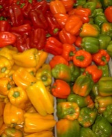

パプリカの生産量
いちばん多くとれる都道府県
パプリカが日本でいちばん多くとれるのは宮城県です。1,470 tで、全国（7,380 t）の20%を占めます。

| 順位 | 都道府県 | 収穫量 | 全国に占める割合 |
|---|---|---|---|
| 1位 | 宮城県 | 1,470 t | 20% |
| 2位 | 茨城県 | 1,100 t | 15% |
| 3位 | 大分県 | 809 t | 11% |
この数字について
- 分類：ナス科
- 全国の収穫量：7,380 t
- この数字が表すもの：収穫量（畑や田でとれた重さ）
- 調査：地域特産野菜生産状況調査 令和4年産
- 36県分を調査（調査していない県は順位に入りません）